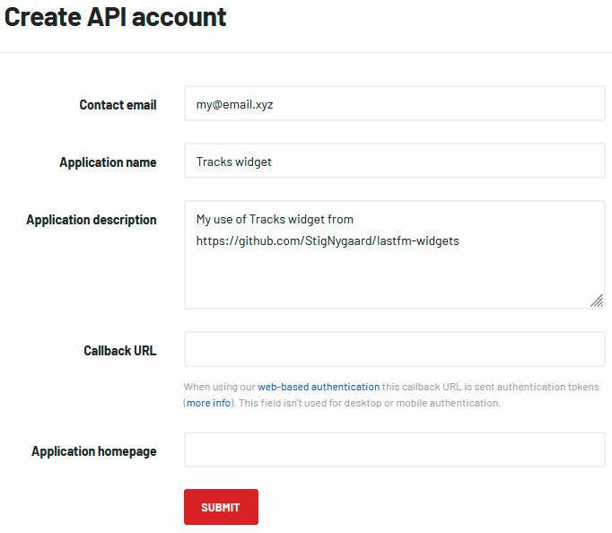

üî¥ Last.fm Tracks widget
This page is a simple demonstration of the Last.fm Tracks widget showing recent "scrobbles" from a last.fm account. Here you'll also find instructions on how to insert the widget on a webpage. But for a start, you can also just try customizing the widget shown here, including making it show scrobbles from your own (or any) Last.fm account with public scrobbles.
The essential
To use the widget on a webpage, you need to import lastfm.js as a module. If you do that from html,
remember the type attribute:
<script src="lastfm.js" type="module"></script>
The script defines the custom html-element <lastfm-tracks/>. Insert such element on a
webpage where you want a Tracks widget to be.
When creating widget, the script will read the tracks.css stylesheet file, which it expects
to find at same location as the script file itself.
The widget has 3 modes. The Demo and Basic modes are "standalone" modes where widget communicates directly with last.fm's API to get the "scrobbles". The third mode is Backend-supported mode where you need to have a backend "proxy-api" that the widget can communicate with. The idea is that the proxy-api should mirror/forward the two methods (user.getinfo and user.getrecenttracks) from last.fm's audioscrobbler 2.0 api that the widget needs to function. Your own backend proxy-api is a very good idea, if widget is to be placed on a page with more than absolute minimal amount of traffic, because you can implement "throttling" in the proxy-api to prevent overwhelming volumes of requests being sent directly to last.fm's API.
-
"Demo" mode
<lastfm-tracks user="your username"></lastfm-tracks> In the "standalone" Demo mode, the widget is "static". Latest "scrobbles" will be loaded upon creation of the widget, but tracklist will not be refreshed after that.
-
"Basic" mode
<lastfm-tracks user="your username" apikey="your own api key" interval="60"></lastfm-tracks> Adding your own API-key - which you can get for free - puts the widget into the Basic mode where it supports periodically refresh of the tracks-list. With the
intervalattribute, you can set the track-list's refresh-rate in seconds. -
"Backend-supported" mode
<lastfm-tracks backend="/proxy-api" interval="35"></lastfm-tracks> Add the
backendattribute pointing to a custom "proxy API" to enable Backend-supported mode. Depending on your proxy-api, you could (or should?) also add other attributes likeuserandapikey. But usually it will be smarter - and simpler - to have fixed values for these defined in the backend.
Attributes
Potential attributes to set on the <lastfm-tracks/> element:
- user - last.fm username.
- apikey - last.fm api-key.
- backend - address of a backend proxy-api.
- interval - update interval in seconds for the tracks-list. On Last.fm profile pages, an update interval of 30 seconds is used. So you should probably never go lower than that. Default value is 60 in Basic and Backend-supported mode, and the widget doesn't allow lower than 30 in Basic mode. The value is ignored in Demo mode.
- tracks - max number of tracks to show. Widget default is 50 (but overridden to 100 in the proxy-api used in this demo when in Backend-supported mode).
- updates - max. number of times to update tracks-list (0 = unlimited, 1 = initial only). Default value is 0 in Basic and Backend-supported mode. The attribute is ignored in Demo mode.
- css classes:
- dynaheader - When added, the profile-widget header becomes "dynamic" (shown only when mouse is over widget)
- no-albums - When added, the red album header-lines will not be shown
Get your own API key for Basic or Backend-supported mode
First go to https://www.last.fm/api/authentication. Though this page talks about authentication and secrets, you can ignore that. For our non-authenticated use of the API, you don't need a secret, but you still need an API-key connected to your Last.fm account. So follow the "apply for a key" link. Here you should enter an application name and description.
I imagine something like this will be fine...
Once submitted, you should get a personal API-key which can be used for the Tracks widget, to either enable the widget's Basic mode, or use it via a proxy-api with widget in Backend-supported mode.